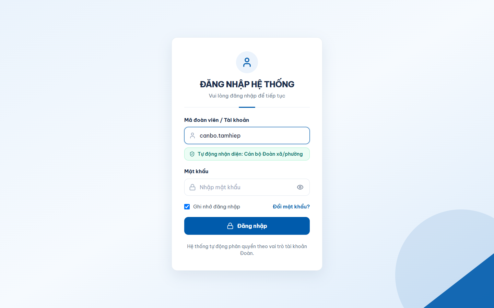
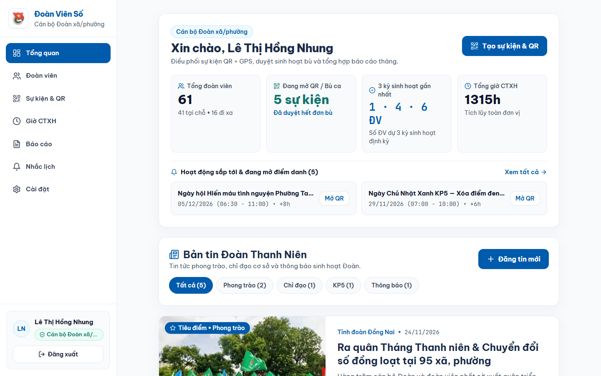
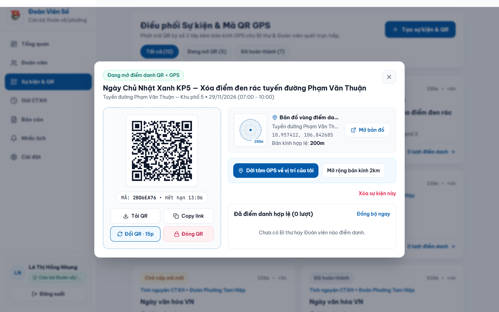
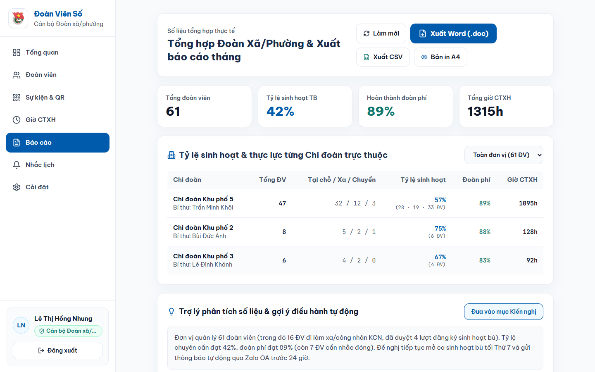
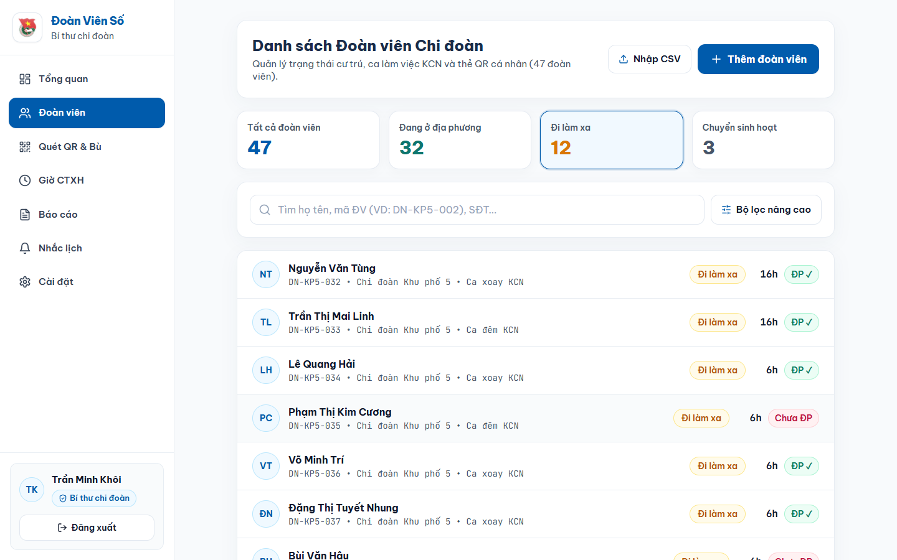
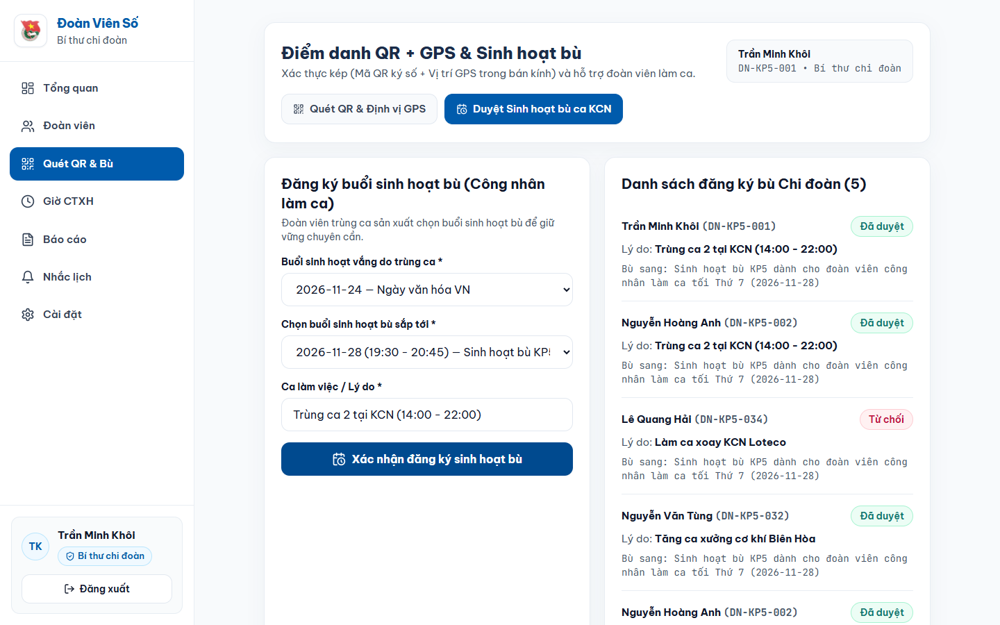
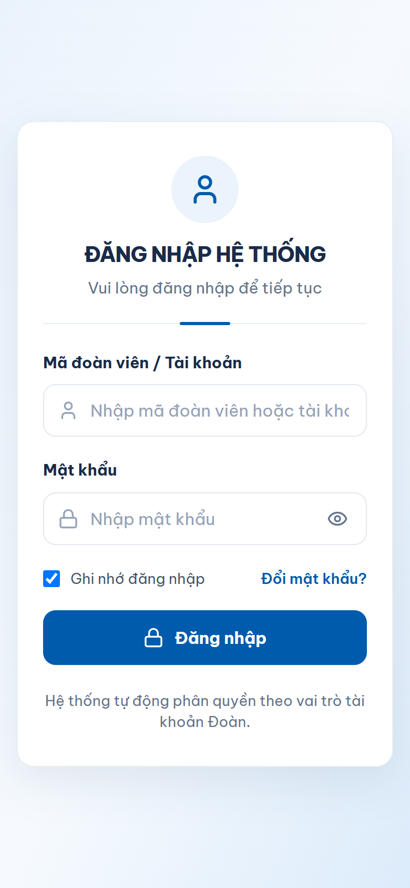
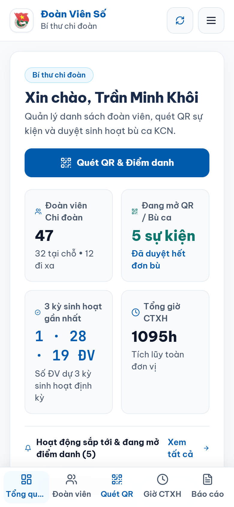
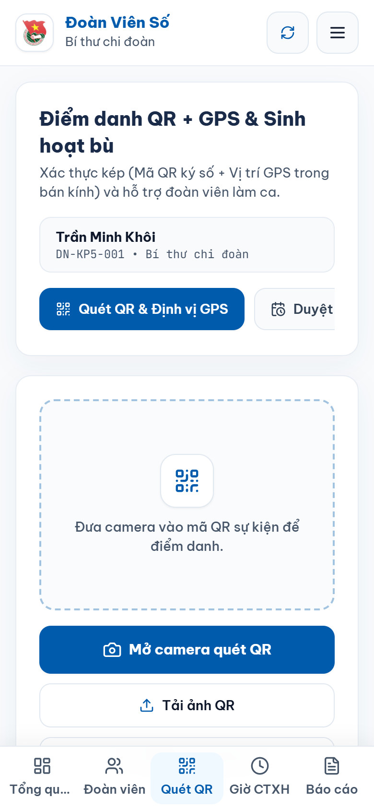

Hệ thống Đoàn Viên Số (Sổ Tay Chi Đoàn Số) — Giải pháp quản lý Chi đoàn khu phố, điểm danh QR + GPS và tổng hợp báo cáo
Hệ thống phục vụ đúng 3 nhóm người dùng trong bối cảnh công tác Đoàn tại Đồng Nai (95 xã, phường), sử dụng mô hình kế thừa quyền hạn: tất cả vai trò dùng chung một bộ màn hình, chỉ hiển thị thêm chức năng tương ứng quyền được cấp thay vì nhân bản code rời rạc.
| Vai trò | Tài khoản thử | Phạm vi & nghiệp vụ chính | Mục tiêu sử dụng |
|---|---|---|---|
Cán bộ Đoàn xã/phườngward_officer |
canbo.tamhiep(MK: 1234?A) |
Đăng/sửa/xóa bản tin Tổng quan; tạo sự kiện gắn tọa độ GPS & bán kính; phát/đổi/đóng mã QR; xem tổng hợp toàn phường (60+ ĐV); xuất báo cáo. | Điều phối sự kiện & tổng hợp số liệu toàn phường |
Bí thư chi đoànbranch_secretary |
bithu.kp5(MK: 123456) |
Quản lý danh sách đoàn viên Chi đoàn Khu phố 5 (thêm/sửa/xóa/nhập CSV/đoàn phí); quét QR + GPS; duyệt đơn sinh hoạt bù công nhân KCN; nhắc lịch & báo cáo chi đoàn. | Thao tác nhanh trên điện thoại, giảm sổ giấy & Zalo |
Đoàn viênmember |
doanvien.kp5(MK: 123456) |
Xem bản tin Đoàn; quét QR (camera/ảnh/link) + xác thực GPS tại sự kiện; xem lịch sử & giờ CTXH cá nhân; đăng ký buổi sinh hoạt bù khi trùng ca KCN. | Công nhân KCN làm ca, dễ tham gia & theo dõi quyền lợi |
15px–16px, tiêu đề 20px–28px, chỉ số KPI 24px–30px (tối thiểu 13px); thẻ bo góc 16px (rounded-2xl), giới hạn chiều rộng max-w-5xl và khóa chống tràn ngang (scrollWidth === innerWidth).#005BAC cho nút chính; xanh ngọc #0F766E cho trạng thái hợp lệ/đạt; đỏ hồng cho ngoài vùng/lỗi; vàng hổ phách cho trạng thái chờ duyệt.44×44px.DD/MM/YYYY (giờ 24h), ẩn các nhãn kỹ thuật nội bộ trên giao diện người dùng, tách riêng lịch nhắc hành chính (chỉ Cán bộ/Bí thư xem) khỏi lịch sinh hoạt của Đoàn viên, thêm ô tìm kiếm ở Giờ CTXH và chú thích rõ Số ĐV dự 3 kỳ sinh hoạt định kỳ.








Bảng dưới đây đối chiếu từng hạng mục trong Phiếu tiêu chí (Đề 1 — Đoàn Viên Số) với hiện trạng thực tế đã triển khai tại https://sotaychidoan.pages.dev.
| Tiêu chí (Điểm) | Mức đáp ứng | Bằng chứng thực tế & điểm lưu ý minh bạch |
|---|---|---|
| 1. Hiểu vấn đề & người dùng (25đ) | Đạt đầy đủ | Đủ 3 nhóm người dùng (Bí thư 27 tuổi, Đoàn viên công nhân KCN làm ca, Cán bộ xã/phường). Giải quyết đúng nỗi đau sổ giấy/nhóm Zalo bằng QR + GPS, bộ lọc cư trú và tổng hợp báo cáo 1 bấm. |
| 2. Thiết kế giải pháp UX/UI (30đ) | Đạt Một phần đối tượng |
Luồng thao tác ngắn (3 bước quét QR → GPS → cộng giờ); chữ vừa–lớn ≥13px; đủ trạng thái trống & thông báo lỗi cụ thể; hiển thị chuẩn cả PC & Mobile. Lưu ý: chưa có chế độ chữ cực lớn/đọc giọng nói riêng cho người cao tuổi. |
| 3. Tính sáng tạo (20đ) | Đạt | Xác thực 2 lớp QR ký số HMAC-SHA256 (đổi mỗi 15 phút) kết hợp GPS Haversine thật (đã gỡ hoàn toàn nút giả lập GPS để chống gian lận), radar trực quan và luồng sinh hoạt bù ca KCN. Lưu ý: phần gợi ý báo cáo dùng luật thống kê theo ngưỡng, chưa phải mô hình AI/ML. |
| 4. Tính khả thi, tác động (25đ) | Đạt đầy đủ | Chạy thực tế 24/7 trên nền web không cần cài app, chi phí vận hành thấp, dữ liệu Neon PostgreSQL chuẩn hóa 3NF, bảo mật mật khẩu scrypt, JWT kiểm tra trạng thái sống và lọc chống XSS/SVG/CSV. Dễ nhân rộng cho 95 xã, phường. |
| Hạng mục đề bài | Trạng thái | Vị trí & kiểm chứng trên web |
|---|---|---|
| Màn hình 1: Đăng nhập theo vai trò | Đủ (1/6) | / khi chưa đăng nhập — tự nhận diện vai trò từ máy chủ xác thực, giao diện tinh gọn. |
| Màn hình 2: Trang chủ chi đoàn (số ĐV, hoạt động sắp tới) | Đủ (2/6) | Tổng quan — hiện số ĐV tại chỗ/đi xa, 3 kỳ gần nhất, hoạt động sắp tới và bản tin. |
| Màn hình 3: Tạo buổi sinh hoạt & mã QR điểm danh | Đủ (3/6) | Sự kiện & QR (Cán bộ) — tạo sự kiện, tọa độ/bán kính GPS, phát/đổi/đóng QR. |
| Màn hình 4: Đoàn viên quét QR, xem lịch sử tham gia | Đủ (4/6) | Quét QR & Bù — quét camera/ảnh/link + GPS, có thẻ Lịch sử tham gia cá nhân. |
| Màn hình 5: Danh sách ĐV có bộ lọc 3 trạng thái | Đủ (5/6) | Đoàn viên — lọc Đang ở địa phương / Đi làm xa / Chuyển sinh hoạt + tìm kiếm. |
| Màn hình 6: Tổng hợp Đoàn xã/phường & xuất báo cáo | Đủ (6/6) | Báo cáo — tỷ lệ sinh hoạt từng chi đoàn, xuất Word/CSV/Bản in PDF A4. |
| Điểm cộng 1: Đoàn viên làm ca chọn buổi sinh hoạt bù | Đủ | Tab Đăng ký Sinh hoạt bù (Làm ca) liên thông sang Bí thư & Cán bộ duyệt. |
| Điểm cộng 2: Nhắc lịch tự động | Một phần | Có tạo lịch, bật/tắt tự động và xem trước mẫu tin Zalo; chưa kết nối gửi Zalo OA thật. |
| Điểm cộng 3: Tích điểm thi đua từ hoạt động tình nguyện | Đủ | Điểm danh QR + GPS thành công tự ghi sổ cái điểm thi đua & xếp hạng tại Giờ CTXH. |
| Dữ liệu mẫu chuẩn đề (46 ĐV: 31·12·3; 3 kỳ: 28·19·33) | Có trong DB | Đã nạp chuẩn trong script seed; khi chạy thử nghiệm thực tế số lượt có thể tăng thêm theo lượt bấm test. |
DD/MM/YYYY.
.doc chuẩn HTML (đã khóa chống rớt dòng tiêu đề/ngày tháng và lặp lại đầu bảng qua trang, chưa phải gói nén .docx); PDF xuất qua hộp thoại in A4 của trình duyệt.